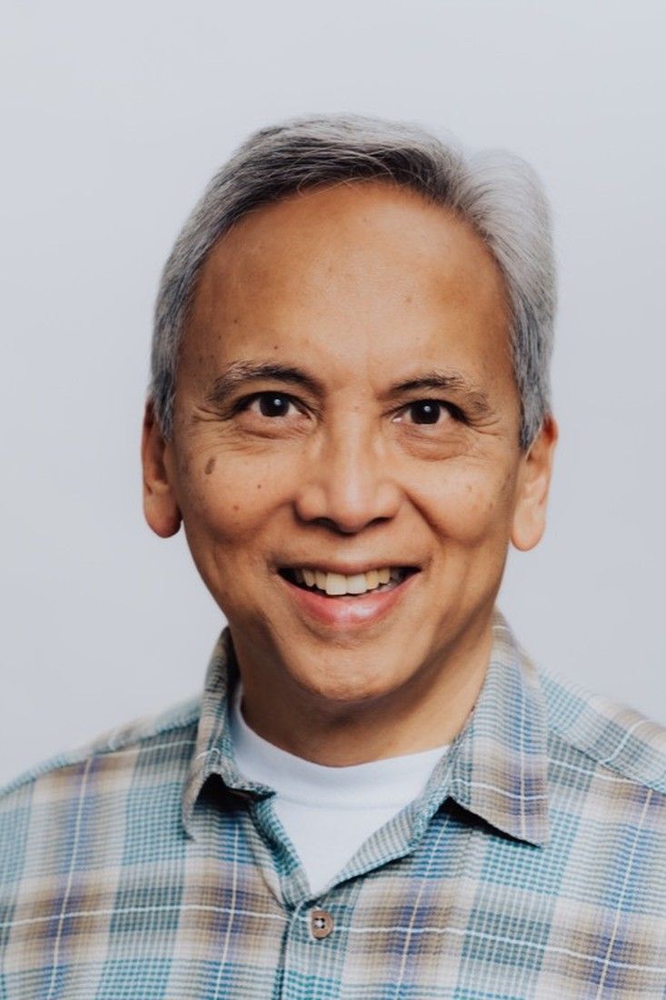

- Ph.D., Clinical Psychology — Duke University
- Advanced Clinical Fellow — Harvard Medical School / Cambridge City Hospital
- M.Div. — Jesuit School of Theology, Berkeley
- B.A. — University of San Francisco
- CA Licensed Psychologist, PSY 9837
Gerdenio "Sonny" Manuel, S.J., Ph.D.
Dr. Gerdenio "Sonny" Manuel has practiced as a licensed psychologist in California since 1985. He completed his clinical internship and advanced clinical fellowship in inpatient and community psychology at Cambridge City Hospital, Harvard Medical School, and received his Ph.D. in clinical psychology from Duke University, his M.Div. from the Jesuit School of Theology at Berkeley, and his B.A. from the University of San Francisco.
His areas of clinical practice and scholarship include adult psychotherapy, relationships and sexuality, coping with suffering and traumatic life events, addiction and recovery, and the relationship of psychology and spirituality to human flourishing. He is the author of Living Celibacy: Healthy Pathways for Priests (Paulist Press, 2012), winner of a Catholic Press Award.
Dr. Manuel is Professor Emeritus of Psychology at the University of San Francisco, where he served as Professor and Chair of Psychology and Director of the Saint Ignatius Institute. As staff psychologist and clinical supervisor at St. Anthony's in San Francisco, he led and supervised psychotherapy groups for men struggling with addiction and recovery. He has held senior academic and leadership roles at Santa Clara University, the University of San Francisco, and across Jesuit higher education. Today he serves as Clinical Training Director at Equity Health, a federally qualified health center providing integrated primary and behavioral health care to San Francisco's diverse and underserved communities, where he trains and supervises the next generation of clinicians while continuing to teach, write, and practice.
“Dr. Manuel is a therapist's therapist… He perfectly blends excellent clinical skills based in psychology, spirituality, and rich personal experience to offer clients the very best psychotherapy experience they can hope to receive.” — Thomas G. Plante, Ph.D., ABPP, Santa Clara University